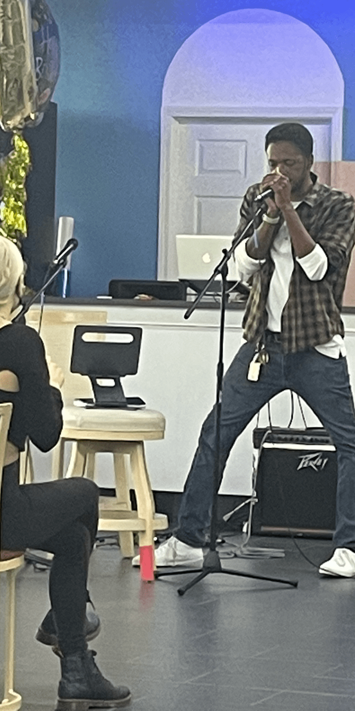

Bio

Talented Music Artist
Foster Lancaster is a pop singer-songwriter and producer based in Ferndale, Michigan.Man Worth Dating
Foster's wholesome lifestyle and quality character make him stand apart from his peers.Cult Following
Foster Lancaster's quotes are omnipresent. It feels like he's everywhere and everyone has an opinion.Always There
Don't be shy, Foster is always eager to say "hi" to fans.Business Contact